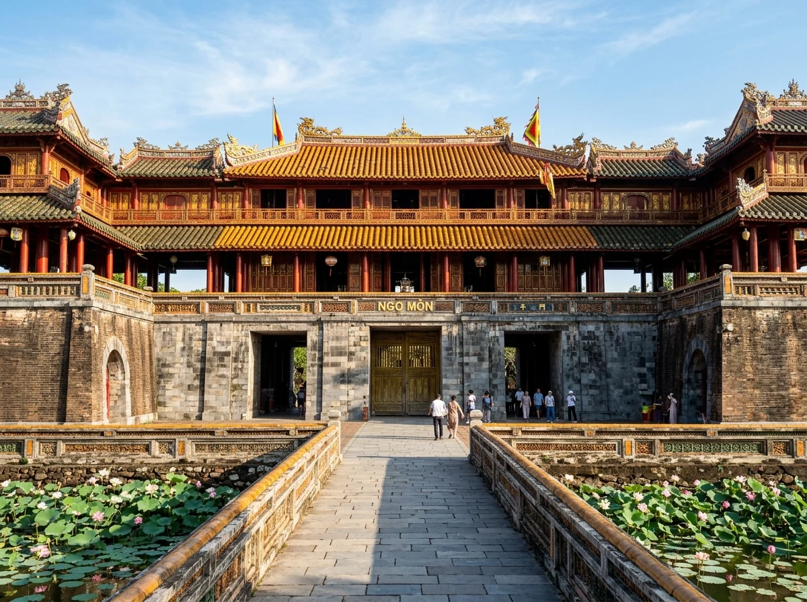
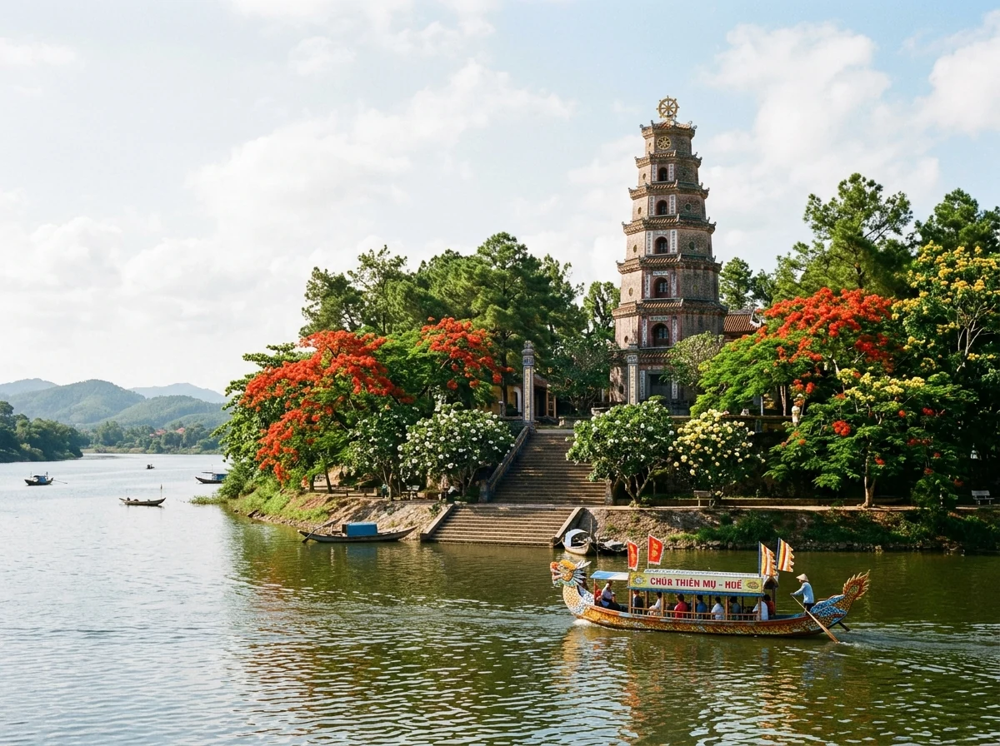
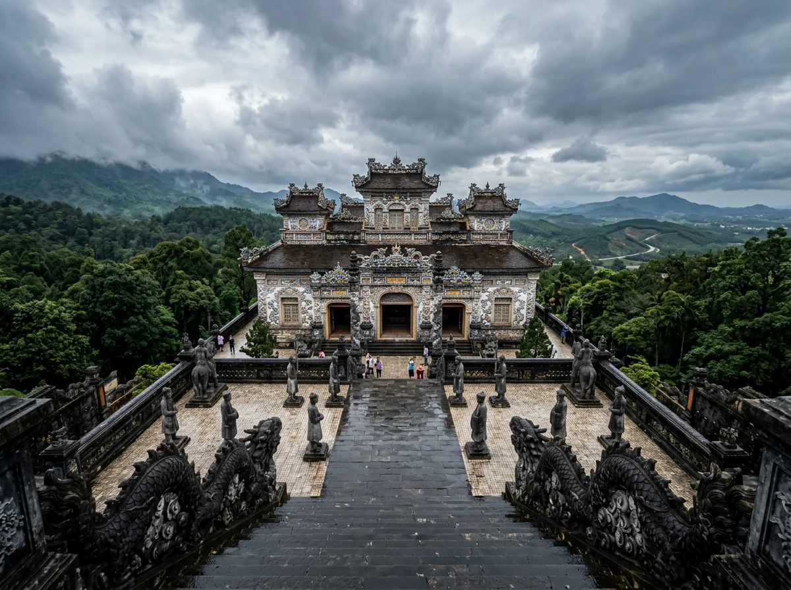
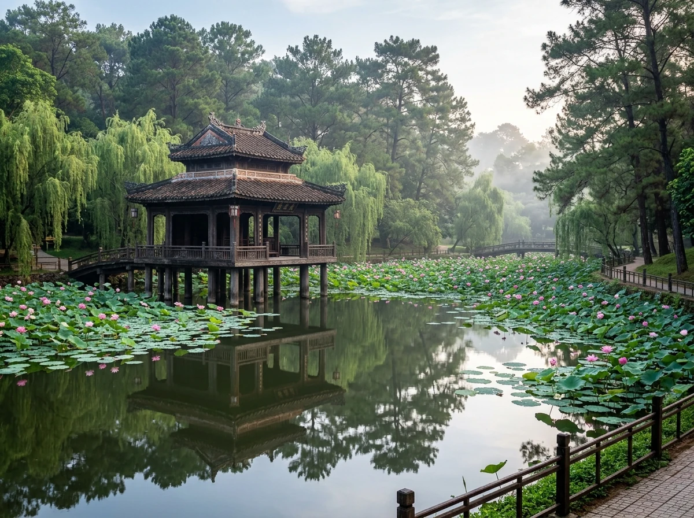
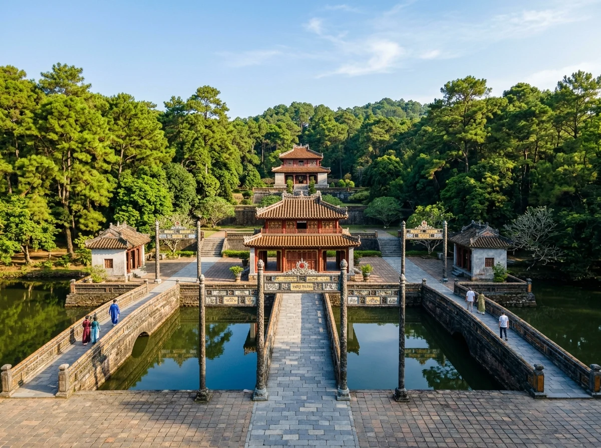
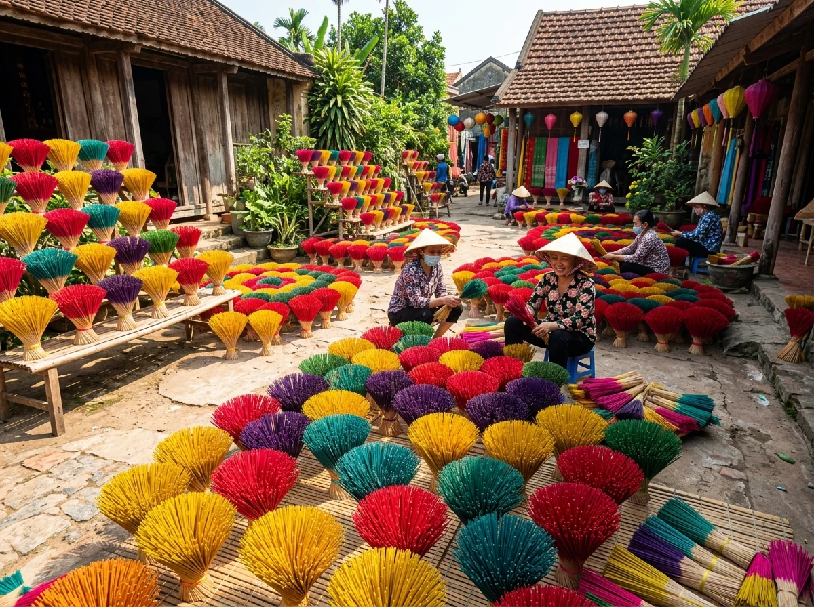
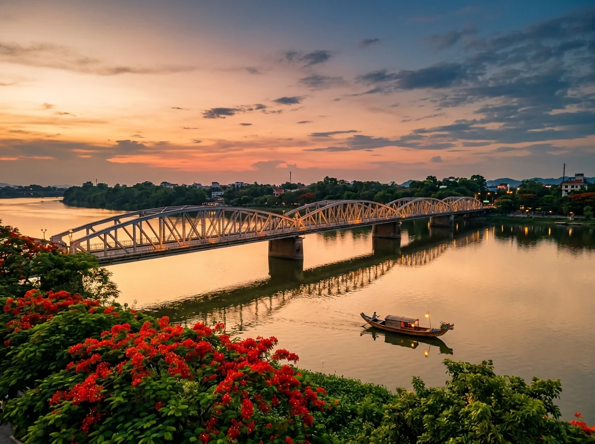
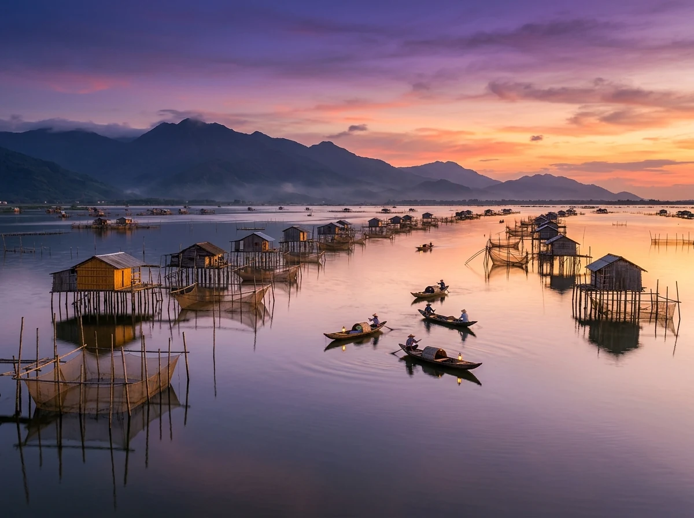

🏛️ 1. Di sản Văn hóa Thế giới Đầu tiên của Việt Nam
Nằm trên dải đất miền Trung đầy nắng gió, Cố đô Huế từng là thủ phủ của các chúa Nguyễn ở Đàng Trong (1558 – 1777), kinh đô của triều đại Tây Sơn (1788 – 1801) và là kinh đô thống nhất của nước Việt Nam dưới 13 triều vua nhà Nguyễn suốt 143 năm (1802 – 1945).
Năm 1993, Quần thể Di tích Cố đô Huế vinh dự trở thành Di sản Văn hóa Thế giới đầu tiên của Việt Nam được UNESCO công nhận. Đến năm 2003, Nhã nhạc Cung đình Huế tiếp tục được vinh danh là Kiệt tác Di sản văn hóa phi vật thể và truyền khẩu của nhân loại. Sự kết hợp hoàn mỹ giữa nghệ thuật kiến trúc cung đình đỉnh cao với cảnh quan phong thủy non nước hữu tình (núi Ngự Bình, sông Hương, cồn Hến, cồn Dã Viên) đã tạo nên một di sản sống động có một không hai.
📸 2. 8 Tọa độ Di sản Biểu tượng & Dấu tích Lịch sử
(Nhấp vào từng hình ảnh để xem chi tiết ảnh chất lượng cao và câu chuyện truyền tích lịch sử)

Ngọ Môn & Điện Thái Hòa (Đại Nội)
Cổng chính phía Nam Hoàng thành nguy nga với lầu Ngũ Phụng, chứng nhân của những sự kiện trọng đại trong lịch sử dân tộc.

Chùa Thiên Mụ & Tháp Phước Duyên
Ngôi cổ tự khởi lập năm 1601 trên đồi Hà Khê, tháp Phước Duyên 7 tầng soi bóng thanh tịnh bên dòng sông Hương.

Lăng Khải Định (Ứng Lăng)
Đỉnh cao kiến trúc giao thoa Á - Âu trên núi Châu Chữ với những bức phù điêu ghép sành sứ tinh xảo tuyệt mỹ.

Lăng Tự Đức (Khiêm Lăng)
Khu lăng tẩm thơ mộng nhất triều Nguyễn nép mình giữa rừng thông, nơi nhà tạ Xung Khiêm Tạ soi bóng hồ sen tĩnh lặng.

Lăng Minh Mạng (Hiếu Lăng)
Tuyệt tác đối xứng thần đạo mẫu mực trên núi Cẩm Kê, hồ Tân Nguyệt ôm trọn sự uy nghiêm của bậc đế vương.

Làng hương Thủy Xuân
Làng nghề làm hương trầm cổ truyền rực rỡ sắc màu ngũ sắc xòe hoa dưới chân đồi Vọng Cảnh thanh bình.

Sông Hương & Cầu Tràng Tiền
Cây cầu thép 6 nhịp duyên dáng bắc qua dòng sông Hương thơ mộng, biểu tượng tình yêu và hoài niệm xứ Huế.

Đầm Lập An & Phá Tam Giang
Vùng đầm phá nước lợ lớn nhất Đông Nam Á với bức tranh hoàng hôn tím thẫm mênh mang và những chòi ngư dân bình dị.
🚗 3. Hướng dẫn Di chuyển & Kết nối Tuyến Di sản
1. Đến với Cố đô Huế
- Máy bay: Đáp chuyến bay thẳng xuống Sân bay Quốc tế Phú Bài (HUI), cách trung tâm thành phố Huế khoảng 15km (20 phút đi taxi).
- Tàu hỏa Bắc - Nam: Tuyến đường sắt kết nối ga Huế với ga Đà Nẵng vượt đèo Hải Vân được đánh giá là một trong những hành trình tàu hỏa ven biển đẹp nhất thế giới.
- Đường bộ từ Đà Nẵng / Hội An (~100km): Đi xe khách hoặc limousine chất lượng cao qua hầm Hải Vân (khoảng 2 tiếng) hoặc tự lái xe máy vượt đèo Hải Vân ngắm vịnh Lăng Cô.
2. Phương tiện dạo quanh Cố Đô
- Xe máy tự lái: Rất thuận tiện để đi thăm các lăng tẩm (Lăng Khải Định, Lăng Tự Đức, Lăng Minh Mạng) và làng hương Thủy Xuân.
- Thuyền rồng sông Hương: Trải nghiệm nghe Ca Huế trên sông Hương và thả đèn hoa đăng ngắm cầu Tràng Tiền lung linh về đêm.
- Xích lô nội thành: Ngắm nhìn những con đường rợp bóng cây xanh và cổng thành rêu phong thong dong, chậm rãi.
💡 Mẹo kết nối tuyến di sản hoàn hảo: Bạn nên sắp xếp hành trình 4 ngày 3 đêm: Huế (2 ngày) → Vượt đèo Hải Vân → Đà Nẵng & Hội An (2 ngày) để trải nghiệm trọn vẹn dải di sản miền Trung.
🎫 4. Bảng giá vé Tham quan Di tích Cố đô Huế
Mức giá vé niêm yết chính thức bởi Trung tâm Bảo tồn Di tích Cố đô Huế (hueworldheritage.org.vn):
| Địa điểm Di tích | Chi phí tham khảo | Ghi chú |
|---|---|---|
| Hoàng Cung Huế (Đại Nội — Ngọ Môn, Điện Thái Hòa, Tử Cấm Thành) | Vé niêm yết tại quầy | Bao gồm Bảo tàng Cổ vật Cung đình |
| Lăng vua Khải Định (Ứng Lăng) | Vé niêm yết tại quầy | Kiệt tác phù điêu sành sứ |
| Lăng vua Tự Đức (Khiêm Lăng) | Vé niêm yết tại quầy | Không gian thi ca hồ Lưu Khiêm |
| Lăng vua Minh Mạng (Hiếu Lăng) | Vé niêm yết tại quầy | Kiến trúc đối xứng trục thần đạo |
| Chùa Thiên Mụ & Làng hương Thủy Xuân | Miễn phí vào cổng | Tự do dâng hương & chụp ảnh |
| Nghe Ca Huế trên thuyền rồng sông Hương | Theo vé bến thuyền Tòa Khâm | Khoảng 50 phút ngoạn cảnh & thả hoa đăng |
🍲 5. Lưu trú & Tinh hoa Ẩm thực Cố Đô
1. Gợi ý điểm lưu trú
- Khách sạn & Boutique ven sông Hương: Tập trung dọc tuyến đường Lê Lợi, Nguyễn Huệ với tầm nhìn thẳng ra dòng sông Hương và cầu Tràng Tiền.
- Resort & Nhà vườn di sản: Pilgrimage Village (Làng Hành Hương), Azerai La Residence hoặc các khu nghỉ dưỡng sinh thái bên đầm Lập An / phá Tam Giang.
- Homestay phong cách Cố Đô: Các ngôi nhà vườn rường gỗ truyền thống yên tĩnh trong khu vực Kim Long hoặc Vỹ Dạ.
2. Tinh hoa ẩm thực xứ Huế
🗓️ 6. Thời điểm vàng & Văn hóa Ứng xử Di sản
1. Các mùa du lịch Huế đẹp nhất
- Tháng 1 – Tháng 4 (Mùa Xuân Cố Đô): Thời điểm tuyệt vời nhất trong năm. Trời nắng ấm nhẹ, mát mẻ, ít mưa, hoa ngô đồng nở rộ rực rỡ trong khuôn viên Đại Nội.
- Tháng 5 – Tháng 8 (Mùa Lễ hội & Biển): Mùa hoa sen nở ngát hồ Tịnh Tâm, thích hợp kết hợp tắm biển Lăng Cô, biển Thuận An và tham quan các chương trình Festival Huế.
- Tháng 9 – Tháng 12 (Mùa Mưa xứ Huế): Mùa mưa dầm mang vẻ đẹp hoài niệm trầm tư, lý tưởng để ngồi quán cà phê ven sông Hương thưởng thức âm nhạc Trịnh Công Sơn.
⚠️ Lưu ý tôn nghiêm di sản: Khi vào tham quan các khu vực tôn nghiêm trong Đại Nội (Điện Thái Hòa, Thế Miếu) và các lăng tẩm, vui lòng mặc trang phục lịch sự kín đáo (áo có tay, quần/váy dài qua đầu gối). Tuyệt đối không chạm tay vào các cổ vật và không vứt rác bừa bãi trong khuôn viên di tích.